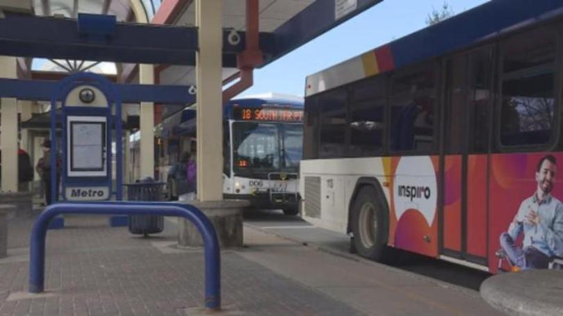

Madison public transportation to receive $24.4 million for coronavirus response
April 3, 2020
MADISON, Wis. (WMTV) -- More than 20 million dollars will be used to help public transportation systems in Madison respond to the coronavirus pandemic.
U.S. Secretary of Transportation Elaine L. Chao said $24.4 million in federal funds will be used in Madison. The funds are part of the $25 billion Chao announced Friday to help the nation's public transportation systems respond to COVID-19.
"This historic $25 billion in grant funding will ensure our nation's public transportation systems can continue to provide services to the millions of Americans who depend on them," Chao said.
The money was made available when President Donald Trump signed the CARES Act on Friday, March 27. The U.S. Department of Transportation's Federal Transit Administration will administer the $25 billion to the public transportation industry.
The DOT said the funds will be available to support capital, operating and other expenses, including fair box recovery, overtime for employees, and expenses like extra hand sanitizer for workers and the traveling public. If a transit operator is put on administrative leave due to reductions in service or having to self-quarantine, funding will be available to cover the worker's salary.
Officials said public transportation systems provide critical transportation to first responders, health care workers, and people who need access to health care.
Source: https://www.nbc15.com/content/news/Madison-public-transportation-to-receive-244-million-for-coronavirus-response-569364891.html retrieved on April 5, 2020